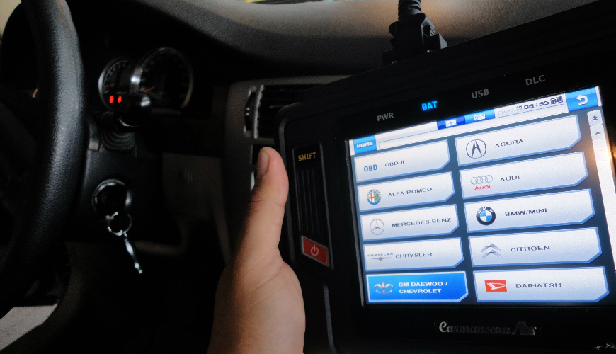
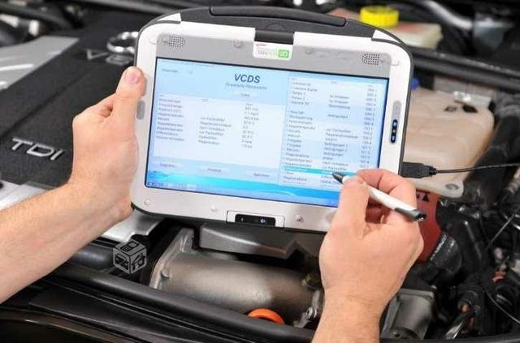
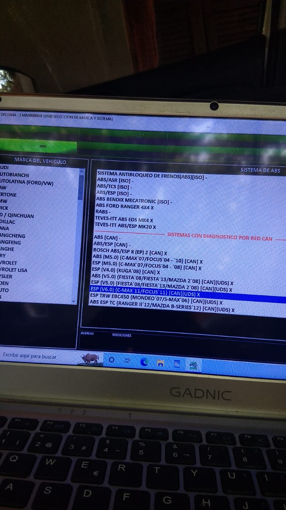
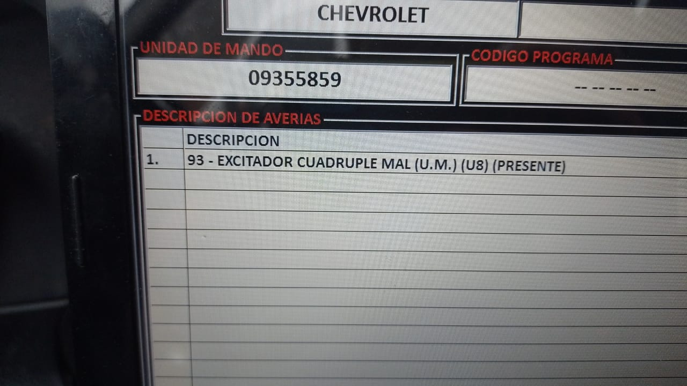

¿Estás cansado de llevar tu vehículo a diferentes talleres y aún no encuentras la solución a tus problemas automotrices?
¡Conoce nuestra empresa de diagnósticos técnicos automotrices de última generación!
Nos especializamos en brindar soluciones precisas y efectivas a cualquier problema que tenga su vehículo. Nuestro equipo de expertos utiliza tecnologías de vanguardia y herramientas de diagnóstico de última generación para ofrecerle un servicio de alta calidad.
Desde problemas de motor hasta fallas en el sistema de inyección, ABS, airbag y electrónica, podemos solucionarlo todo. Además, ofrecemos un informe detallado y fácil de entender que incluye una descripción clara de los problemas y las soluciones recomendadas.
No más esperas interminables en el taller ni soluciones inciertas. Con nuestro diagnóstico técnico automotriz de última generación, puede estar seguro de que su vehículo está en buenas manos. ¡Contáctanos hoy mismo y experimente la diferencia en servicios de diagnóstico automotriz!
